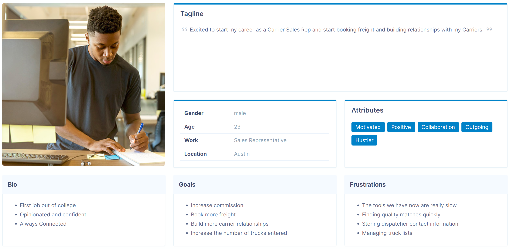
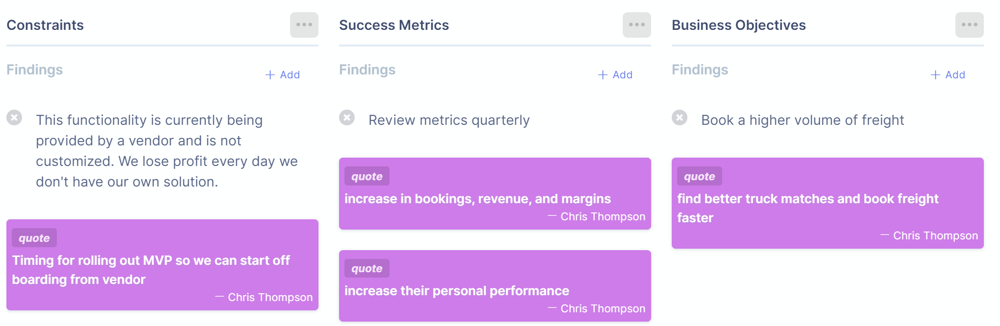
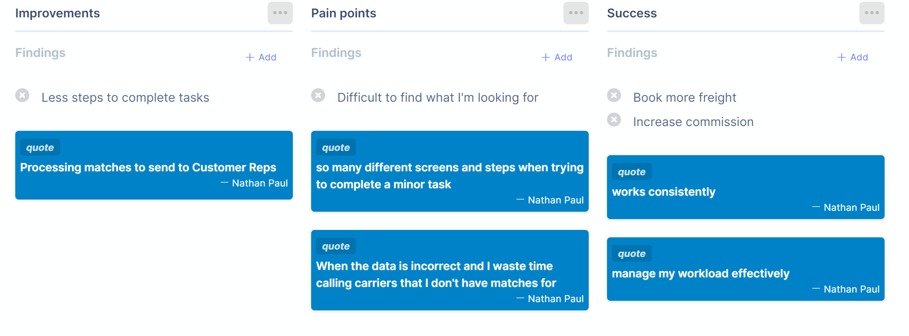
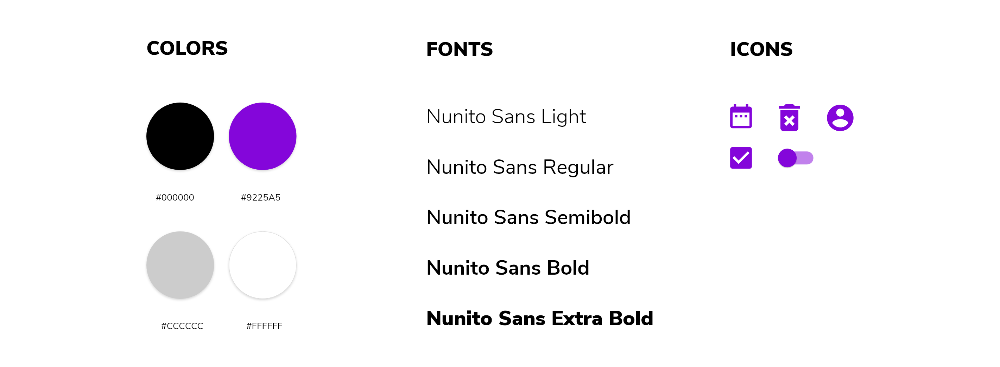
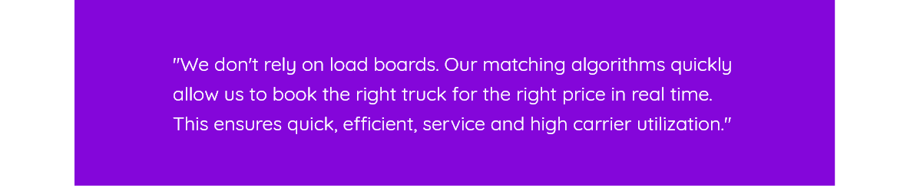

Truck Match is an algorithm based product for matching available trucks to available freight. The algorithm uses a grading scale to determine the quality of the match. Once a match is graded, offers can be processed and sent to the Customer Sales team notifying them of a top-notch match.
Goals
Match Accuracy
Increase quality matches
Manage Capacity
Enter and manage trucks
Increase Bookings
Confidently book Carriers
My Role & Team
Lead UI/UX Designer and Business Analyst whose multi-disciplinary team included stakeholders, engineers, executive leadership, learning and development, and sales reps. Joining forces with multiple departments promoted collaboration among all team members.
Research
Personas & Interviews
Business Analysis
Tasks & Processes
UI/UX Design
Wireframes, Usability, Prototypes
Challenges
The main challenge was to create a product that Carrier Sales reps could trust. They resort to manual efforts when technology does not deliver. This includes spreadsheets, emails, and pen & paper. This is a huge disadvantage to the business since taking work offline skews the overall company metrics. Below are the key areas we focused on to ensure the technology will successfully support Carrier Sales reps.
Research
I was able to shadow Carrier Sales reps and see how they use the current tool. They were able to identify current pain points and suggested ideas for how the new product could improve them. Below is a persona on the target audience.

I met with stakeholders & users to gain a more in depth analysis of the product needs.


Surface
I created a style guide and completed the final high fidelity prototype.

Conclusion
The product launched successfully with the accuracy of the new matching algorithm. Metrics are reviewed quarterly to track the ROI of the product. Carrier Sales Reps are very happy with Truck Match!

After the product launch it continued to evolve and allow managers and executives additional functionality to track their teams performance. The data from Truck Match has been utilized in company dashboards to allow the Executive Leadership team to gain quick insights into KPIs.
Reflections
This project was a fantastic learning opportunity and presented many new challenges that I was happy to learn and take on. Looking back at the approach for Truck Match there are a few areas that I would tackle differently going forward:
Matching Algorithm
Work with the Carrier Sales reps on the grading scale. When the matching algorithm was first tested we had to adjust the ranges because they were too narrow and potential matches were missed.
User Levels
We added user levels for managers and executives retroactively. This process would have been much more streamlined if User Management was completed prior to building out Truck Match.
Learning & Development
Working with Learning and Development to conduct training sessions. Even though we provided release notes and training documentation, there were still a lot of questions around how to use Truck Match. I feel that if I was more involved in conducting the training it would have helped users on-board faster.